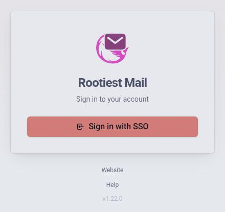
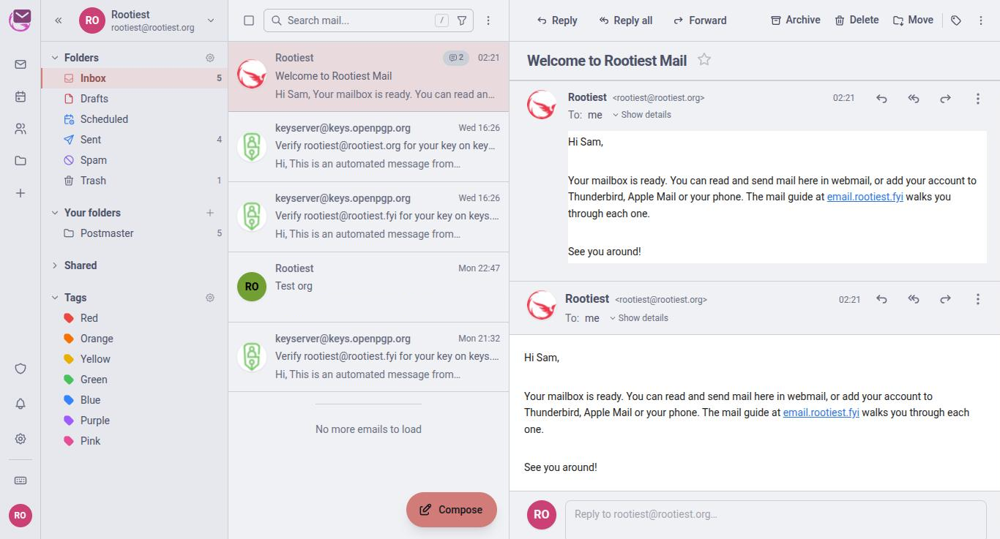
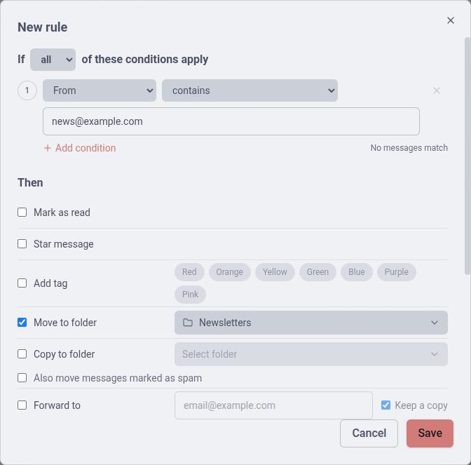
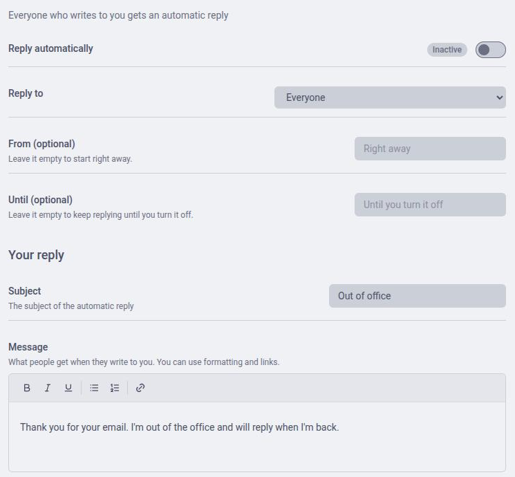

Webmail
Webmail lets you use Rootiest Mail from any browser without setting anything up. It lives at webmail.rootiest.dev and works on phones too.
Signing in
- Go to webmail.rootiest.dev.
- Click Login with RootiestID under the form. Ignore the Username and Password boxes above it.
- Sign in to RootiestID if it asks. You land in your inbox.

Webmail signs you out after about an hour of not using it. Just click Login with RootiestID again.
Finding your way around

- The menu on the far left switches between Mail, Contacts and Settings. Compose at the top starts a new message.
- Select a message and use the buttons above it to reply, forward, delete, archive it or mark it as junk. The Archive button needs to know which folder to use: pick one under Settings → Preferences → Special Folders.
- Spam that gets caught lands in the Junk folder. It's worth a look now and then in case something real ended up there.
- Attachments in webmail can be up to 25 MB.
Folders
Make, rename and delete folders under Settings → Folders. Folders are stored on the server, so they show up in your mail apps too. If a folder you expect is missing in webmail or an app, check that it's subscribed (the switch next to it in Settings → Folders). Each app keeps its own list of subscribed folders.
Contacts
Under Contacts you'll see two kinds of address book:
- The address books under Rootiest Mail hold the contacts stored on the mail server. These sync with your phone and computer if you set up contacts syncing. Save contacts here.
- Personal Addresses only exists inside webmail and doesn't sync anywhere.
Contacts you add on your phone or in Thunderbird can take up to 15 minutes to show up in webmail.
Filters
Filters sort your mail as it arrives, for example moving everything from a mailing list into its own folder. They run on the server, so they work even when webmail and your apps are closed.
- Open Settings → Filters.
- Click Create, fill in the Filter name, and set the rule. For example: From contains
news@example.com, then Move message to Newsletters. - Click Save.

Out of office replies
To answer mail automatically while you're away:
- Open Settings → Out of Office.
- Fill in the Subject and Body. If you know when you'll be back, set the Start time and End time and it turns itself on and off.
- Set Status to On and click Save. When you're back (and didn't set an end time), set it to Off again.

Sending from another address
If you have an alias, you can send from it. Go to Settings → Identities, click Create, and put the alias in the Email box. When you write a message, pick it in the From menu.